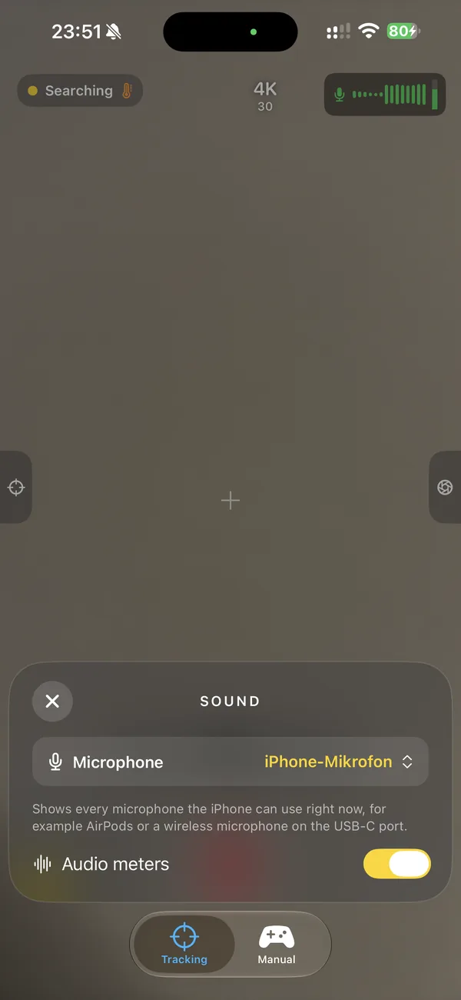

相機與格式
影片和拍照模式、解析度、幀率、鏡頭。


影片還是照片
快門左側的開關用於切換模式。相機會重新配置，與 Apple 的“相機”App 一樣。
- 影片模式：跨三個鏡頭的連續變焦，以及自動變焦。
- 拍照模式：所選鏡頭的完整照片解析度。取景畫面為 4:3。
設定格式
輕點頂部中央的格式顯示。錄製期間面板被鎖定。
影片
| 設定項 | 選項 |
|---|---|
| 解析度 | HD（1920 × 1080）或 4K（3840 × 2160） |
| 影格率 | 每秒 24、30 或 60 幀，PAL 為 25 幀 |
| 編碼 | HEVC；使用 Keepsight Pro 可選 ProRes 422 HQ |
| 控制 | 自動 Pro |
| 格線 | 關閉 開啟 |
照片
| 設定項 | 選項 |
|---|---|
| 格式 | HEIF 或 RAW（Apple ProRAW，需要 Keepsight Pro） |
| 解析度 | 取決於鏡頭所能提供的規格，見下文 |
| 控制 | 自動 Pro |
| 格線 | 關閉 開啟 |
手動設定
手動設定：自己設定 ISO、快門、白平衡、色調和對焦，每項單獨調整。需要 Keepsight Pro。


要打開它們，請點一下頂部的格式顯示，把 控制 切換為 Pro。在相機面板裡也能找到 手動設定；從那裡進入，在錄製影片時同樣可用。
視窗較矮，不會壓暗畫面，所以每次調整都能立刻看到。小小的「A」標出相機仍在自行設定的每個數值。一旦你移動滑桿，該數值就被固定。自動 把它交還給相機，全部自動 重置全部。你的數值對照片和影片都有效，並會一直保留到你更改為止。
剛開始用？把所有項目留在自動，先試試曝光。每項設定在你移動滑桿之前都保持自動。點一下「自動」可把它交還給相機。
曝光
曝光：讓整個畫面變亮或變暗，相機仍會自己測光。這是入門時最容易上手的調整。
畫面太暗或太亮時使用，例如明亮天空前的主體、雪地或舞台。加號變亮，減號變暗，以三分之一級為單位，從 −3 到 +3。ISO 或快門固定時同樣可用。
ISO
ISO：感光元件的感光度。數值越高，畫面越亮，但顆粒越多。在光線允許的情況下盡量調低。
白天選擇較低的 ISO 可得到最乾淨的畫面，在室內或黃昏時再調高。如果只固定 ISO，Keepsight 會自行調整快門時間，使亮度保持合適。
快門
快門：每張畫面曝光的時間。1/1000 這樣的短時間能凝結快速動作。時間越長，進光越多，但動作會模糊。
拍鳥、運動和飛機時使用 1/1000 或更短的時間，讓它們保持清晰。想要看起來自然的影片，可使用約兩倍於影格率的數值，例如每秒 30 格時用 1/60。如果只固定快門，Keepsight 會自行調整 ISO。影片中時間不能長於一格；照片模式下最長可到 1/4 秒。
白平衡
白平衡：讓顏色與光線相配，使白色看起來是白色。點一下燈泡、太陽、雲或陰影符號，或以克耳文設定數值。
當錄製過程中顏色發生變化時把它固定，例如相機從陽光轉向陰影，或燈光看起來太黃。符號分別設定：白熾燈 3200 K、日光燈 4000 K、日光 5600 K、陰天 6500 K、陰影 7500 K。滑桿範圍為 2500 K 到 10000 K。
色調
色調：在綠色和洋紅之間偏移顏色。通常只在人造光下需要。
當皮膚或白牆看起來偏綠或偏粉時使用，這在 LED 燈或日光燈下很常見。移動滑桿，直到白色重新顯得中性。白平衡固定而色調為自動時，色調會保持最後測得的數值，反之亦然。
對焦
對焦：設定清晰的距離，左邊近，右邊遠。
自動對焦來回尋找時使用，例如隔著柵欄、窗戶或樹枝拍攝，或天空背景下的小主體。距離設定一次後就保持不變。飛機這類遠處的主體位於滑桿的最右端。
光圈
光圈：鏡頭的開口大小。Keepsight 會顯示數值，但目前還不能更改，在 iPhone 18 Pro 上也不能。
格線
格線：橫豎各兩條線，幫你保持地平線水平並安排主體位置。它們不會儲存到照片或影片中。
在格式面板的 格線 中打開。所有人都可使用，沒有 Pro 也可以。把主體放在四個交叉點之一，畫面會更均衡；還可借助線條讓地平線和建築保持橫平豎直。
清晰度：AF 與跟隨對焦
AF：鏡頭列末端的 AF 按鈕會對被追蹤的主體對焦一次，如果沒有追蹤，則對畫面中央對焦。所有人免費。
輕點對焦：輕點觀景窗中的任意位置。Keepsight 會在該處對焦並測光一次（以黃色方框顯示），並選取你輕點的主體。如果你手動設定了對焦或曝光，該設定保持不變。所有人免費。
對焦跟隨主體：Keepsight 追蹤主體時，焦點會一直保持在主體上，即使它移到畫面邊緣。在設定的 監看工具 → 對焦跟隨主體 中開啟。一旦你手動對焦，此功能會暫停。需要 Keepsight Pro。
監看工具
監看工具像專業攝影機一樣顯示畫面的真實樣貌。它們只顯示在螢幕上，絕不會儲存到照片或影片中。需要 Keepsight Pro。
快速開關：用右側的圓形按鈕打開相機選單。在 監看工具 中，輕點一下即可開關每個工具。再次輕點畫幅框圖塊可切換畫幅。
| 工具 | 顯示內容 |
|---|---|
| 斑馬紋 | 在過亮且失去細節的區域顯示白色斜紋。用 斑馬紋閾值 設定門檻，範圍 75 至 100 %。如果臉上或天空出現斜紋，請降低曝光。 |
| 峰值對焦 | 為清晰的邊緣上色。手動對焦時很實用：轉動對焦直到主體亮起。選擇最醒目的顏色：綠色、紅色、藍色或黃色。 |
| 直方圖 | 亮度的分佈，左側為暗，右側為亮。山峰貼著右邊緣表示過曝，貼著左邊緣表示曝光不足。 |
| 音訊電平表 | 音訊方塊：在你說話時顯示音量，錄製前也會顯示。綠色為良好，黃色為偏大，紅色為過大。聲音太小、太大或失真時會出現警告。此顯示絕不會出現在影片中。 |
| 畫幅參考框 | 將所選畫幅以外的區域變暗：Reels 和 Shorts 用 9:16，貼文用 4:5 和 1:1，還有 4:3、16:9 及電影畫幅 1.85:1 和 2.39:1。影片本身保持完整畫幅，之後可以再裁切。 |
聲音
好的聲音和好的畫面同樣重要，對著鏡頭說話時尤其如此。要打開聲音選單，請點一下取景器中的音量表，或打開相機選單並點一下 聲音 下的 麥克風。該選單在影片模式下可用，需要 Keepsight Pro。選單只顯示目前可用的項目：連接藍牙耳機時才出現 AirPods 開關，只有能錄製空間音訊的 iPhone 才顯示空間音訊。

| 設定項 | 含義 |
|---|---|
| 麥克風 | 顯示 iPhone 目前可以使用的所有麥克風，例如 AirPods 或接在 USB-C 連接埠上的無線麥克風。 |
| 將 AirPods 當作麥克風 | 用 AirPods 取代 iPhone 麥克風，以高品質錄下你的聲音。適合離 iPhone 較遠時使用。 |
| 空間音訊 | 以 3D 方式錄製聲音。之後可在「照片」中用「混音」分離人聲和環境聲。需要 iPhone 16 或後續機型以及內建麥克風。 |
附 USB-C 接收器的無線麥克風（例如 DJI 或 Rode 的產品）與其他外接麥克風一樣使用：插上接收器，然後在 麥克風 中選擇它。
將 AirPods 當作麥克風需要 iOS 26 和配備 H2 晶片的 AirPods，例如 AirPods Pro 2 或 AirPods 4。空間音訊與 AirPods 麥克風不能同時使用。疊加影片和虛擬雲台影片保留一般立體聲。
雙鏡頭錄製：附自拍畫面的影片
雙鏡頭錄製：後置相機拍攝並追蹤主體，前置相機同時拍攝你。你的自拍以小畫面顯示在影片右下角。
在影片模式下，透過相機面板中的 雙鏡頭 方塊開啟。在設定中開啟 另存自拍影片 後，你的自拍還會另存為單獨的影片，方便你之後自行剪輯。雙鏡頭錄製開啟時，觀景窗在右上角顯示你的自拍，橫向時顯示在左下角。
- 兩個相機最高以 1080p、每秒 30 格錄製，不支援 4K 和 ProRes。後置相機使用主鏡頭，變焦為數位變焦。
- 追蹤、手勢、語音指令和穩定器照常運作。
- 僅限影片模式。在照片模式下雙鏡頭錄製會暫停，回到影片模式後恢復。切換到前置相機會結束雙鏡頭錄製。
- iPhone 過熱時，自拍畫面會自動關閉。
- 需要 Keepsight Pro，以及能同時用兩個相機拍攝的 iPhone。如果你的裝置不支援，Keepsight 會提示你。
錄製時降低發熱
在陽光下長時間錄製會讓任何 iPhone 發熱。開啟 錄製時降低發熱 後，Keepsight 會在錄製期間節省能耗，停止後全部恢復。預設開啟，所有人免費。
- 螢幕會在 10 秒後變暗。輕點即可喚醒。錄製繼續進行。
- 主體靜止時，辨識頻率降低。一旦主體移動，又會恢復全速運作。
- 手勢檢查頻率降低，語音控制保持開啟。
- 監看工具和 Apple Watch 上的即時畫面更新頻率降低。
如果 iPhone 仍然發熱，Keepsight 會進一步處理：先關閉自拍畫面，再暫停疊加影片，然後降低辨識速度。iPhone 過熱時，追蹤停止，錄影會被儲存。
前置相機與自拍
縮圖旁帶兩個箭頭的按鈕可切換到前置相機。你看到的是映象的自己，與 Apple 的“相機”App 一樣。拍攝內容以非映象方式儲存，也就是別人看你的樣子；照片可以更改這一點。
- 影片和照片：影片最高 4K，照片為前置相機的完整解析度。
- 拍攝物件：切換後，Keepsight 會改為 臉孔 並對準你的眼睛。配合雲臺時，它在前置相機前同樣會跟隨你。
- 拍照模式下的自拍欄：在快門上方選擇 單張、微笑 或 注視。Smile 和 Look 一經輕點即進入待命狀態：當所有人微笑或看向鏡頭時，Keepsight 會自動拍照。兩者都屬於 Keepsight Pro。
- 倒計時：使用前置相機時，螢幕閃爍代替補光燈。
- 不可用：鏡頭選擇和自動變焦，因為前置相機只有一個鏡頭。
人像
自拍欄或相機面板中的 人像 屬於 Keepsight Pro。
- 照片：Keepsight 會連同前置相機的深度資料一起儲存照片。之後可在“照片”App 中調整背景虛化。人像照片為 12 MP 的 HEIF；此處無法使用 ProRAW。
- 影片：Keepsight 會選擇支援 Apple 人像效果的格式，通常為 1080p、30 幀。效果本身需在控制中心的 視訊效果 中開啟；Keepsight 會替你開啟它。視 iPhone 機型而定，那裡還有攝影室燈光和人物居中。
相機面板中的 鏡像自拍 會按你在取景器中看到的樣子儲存自拍照片。
影片錄製期間無法切換相機。
鏡頭與畫素
| 鏡頭 | 照片解析度 |
|---|---|
| .5× 超廣角 | 1200 萬像素；iPhone 16 Pro 起最高 4800 萬像素 |
| 1× 主攝 | 12、24 或 48 MP；RAW 為 12 或 48 MP |
| 望遠 | 1200 萬像素；iPhone 17 Pro 起最高 4800 萬像素 |
這些是 Apple 對 iPhone 15 Pro 及之後 Pro 機型提供的規格。Keepsight 目前只在 iPhone 15 Pro Max 和 iPhone 17 Pro Max 上測試過。其他機型在部分鏡頭上的像素較少。格式面板始終只顯示你的 iPhone 目前鏡頭真正能提供的選項。
透過語音觸發時，Keepsight 會自動切換到拍照或影片模式；手勢則在目前模式下生效。只有錄影過程中拍的照片約為 1000 萬像素。